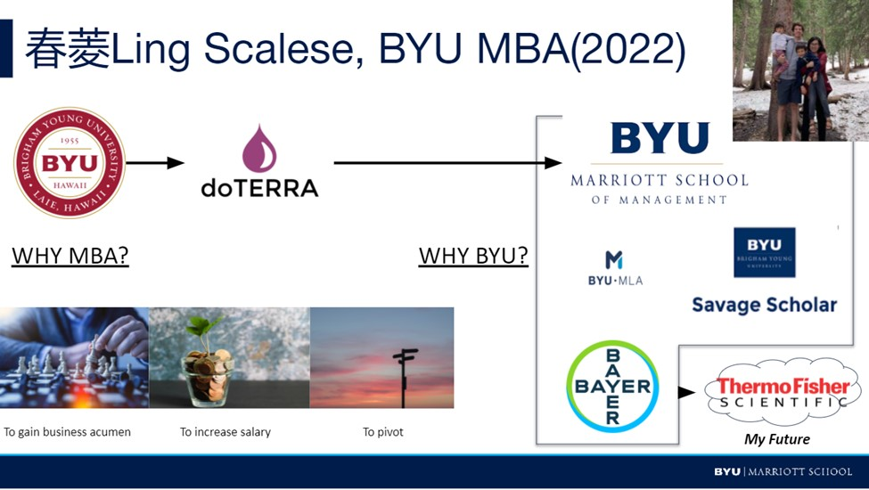
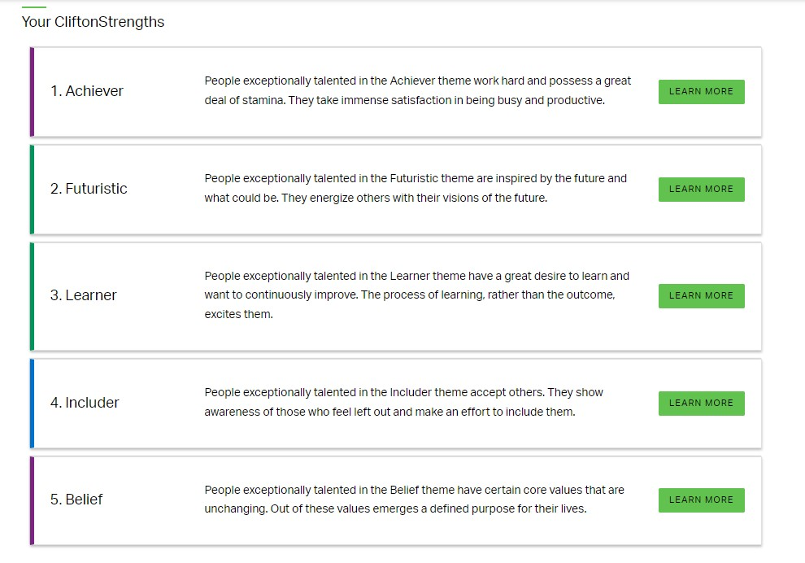

My Career Path
Go to my internship Go to my strengthI am going in to general manager track of GLDP program at Thermo Fisher after graduating from BYU MBA. After two years, my goal is to become a general manager at Thermo Fisher.
 My projected career pathMy Internship
Go to my career path Go to my strengthBayer AG, Summer 2021, NJ
Procurement Master Intern (Supported two procurement function areas)
- Increased purchasing efficiencies for stakeholders through analyzing and classifying more than 240 suppliers
- Outlined a payment term guidance to support category managers negotiating better terms on a global level
- Enhanced management transparency by implementing a simplified tracker and creating interactive a dashboard
My Strength
Go to my career path Go to my internshipI have five years experience in business development and training in a global setting. I am customer oriented problem solver with an ability to adapt to new situations. I am experienced in Microsoft, CRM, BI and Tableau reporting system.I also a futurist who focus on long term planning.
 My top five strength